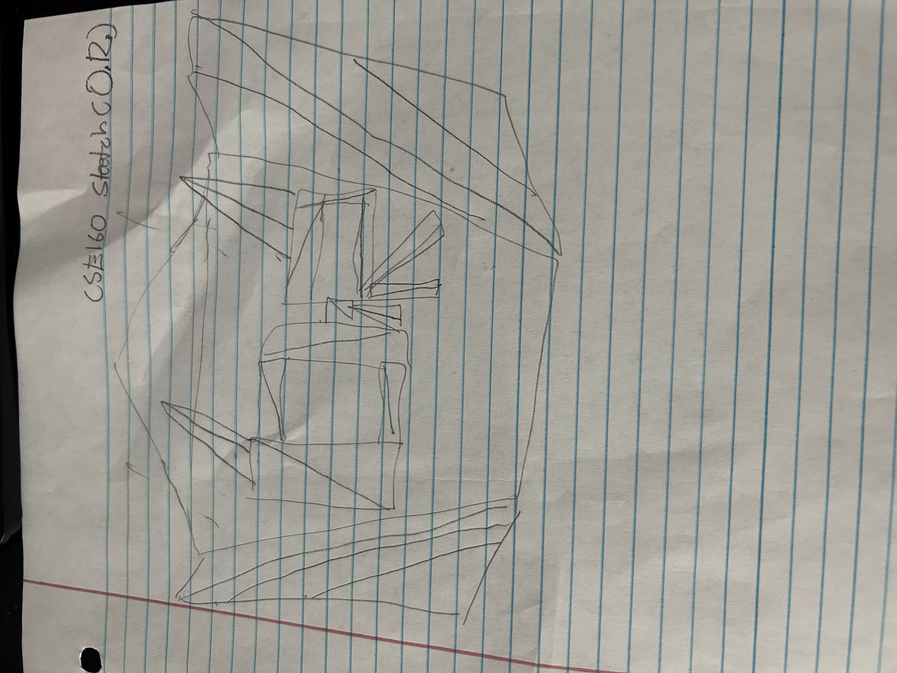

xxx
Point Triangle Circle Picture
Scatter Rainbow On Rainbow Off
Red Green Blue
Size
Segment
Notes for grader: Please see the scatter and rainbow mode buttons. The scatter button moves all the shapes around the canvas, including the painting and the rainbow button allows you to draw different
